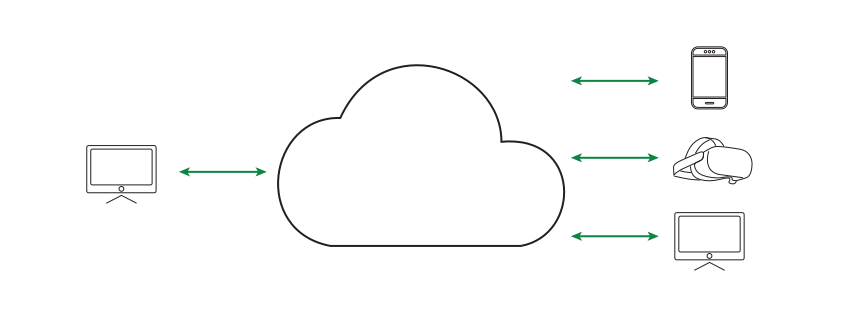

Radii Documentation#
0.40
Example Project#
Immersive Design Studio at Gramazio Kohler Research, ETH Zürich, Autumn semester 2023 student project by Gabriel Mösch & Brandon Schwab Rodriguez
Further Links#
Videos about the current development and news are available on Archtica Youtube Channel. If you find any bugs, please notify us on GitHub. For errors or inconsistencies in the documentation, please notify us on Github Radii Documentation Issues.
Download Links#
Grasshopper Plugin
PC Viewers
Further viewers for VR, Mobile, Looking Glass and the Webviewer can be found on RADii.
Table of Contents#
- Home
- Setups
- Tutorials
- Radii Viewer
- RADii Grasshopper
- 1. Connect Global & Local
- 1. PublishGeometry
- 2. PublishMaterial
- 3. PublishSection
- 4. PublishControl
- 5. PublishView
- 6. PublishPointcloud
- 7. PublishAnimation
- 8. PublishCurve
- 9. PublishMessage
- 10. Publish Sound
- 11. PublishReference
- 12. PublishParameter
- 13. PublishTransform
- 1. SaveContent
- 2. Save Scenario
- 1. Params Connect
- 2. Params Content
- 3. Params Pointcloud
- 1. SubscribeCurve
- 2. SubscribeMessages
- 3. SubscribePointCloud
- 4. SubscribeGeometry
- 5. SubscribeParameter
- 6. SubscribeUser
- 1. PointCloudReduce & SubsetPointCloud
- 2. Tool Paint Vertex
- Ten rules for working with Radii